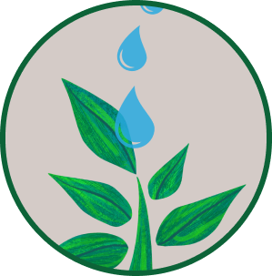

<p>
  <mat-toolbar class="container">
    <a class="tag-inicio" routerLink="" mat-list-item>
      Início
   </a>
   <a class="tag-sobre" href="#sobrenos" mat-list-item>
    Sobre nós
   </a>
   <a class="tag-plantas" routerLink="plantas" mat-list-item>
    Plantas
   </a>
   <a class="tag-contato" routerLink="contato" mat-list-item>
    Contato
   </a>
    


 </mat-toolbar>
</p>
